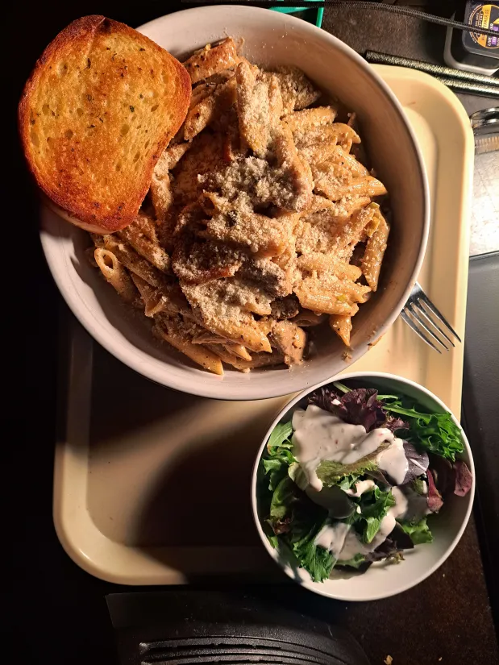

CAJUN CHICKEN PASTA FOR YOUR FAT HUNGRY ASS
Home

Delicious ass bowl of Cajun Chicken Pasta as presented by BG.
Ingredients:
- 4 ounces linguine pasta or any other kind of pasta, I don't give a fuck
- 2 skinless, boneless chicken thighs
- 2 teaspoons Cajun seasoning or Blackening
- 2 tablespoons butter, and use the real shit
- 1 red bell pepper, sliced
- 1 green bell pepper, sliced
- 4 fresh mushrooms, sliced
- A couple of garlic cloves, minced
- 1 green onion, chopped
- 1 cup heavy cream
- ¼ teaspoon dried basil
- ¼ teaspoon lemon pepper
- ¼ teaspoon salt
- ⅛ teaspoon garlic powder
- ⅛ teaspoon ground black pepper
- ¼ cup grated Parmesan cheese
Steps for babbies who can't cook
- Bring a large pot of salted water to a boil. Add pasta and cook until al dente, 8 to 10 minutes. Drain. If that shit is limp like your grandad's dick, you've fucked it and need to start over.
- Cut chicken breast into strips. Place chicken and Cajun seasoning in a plastic bag. Shake to coat.
- Melt butter in a large skillet over medium heat. Add chicken and cook, stirring, until browned and almost cooked through, 5 to 7 minutes. (Alternatively, you can pan fry the chicken breasts whole in some olive oil after coating with seasoning and slice then place on top of pasta to make it look sassy as fuck)
- Add bell peppers, mushrooms, green onion and garlic. Cook, stirring, 2 to 3 minutes. Don't forget the fucking garlic.
- Reduce the heat and stir in cream, basil, lemon pepper, salt, garlic powder, and black pepper. Heat through. Add cooked linguine, toss, and heat through. Dont break the fucking sauce.
- Sprinkle with Parma Jawn
- Eat up fat fuck